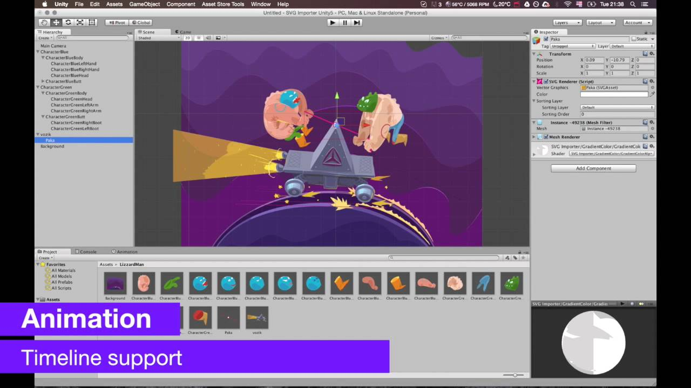
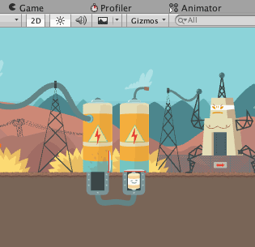
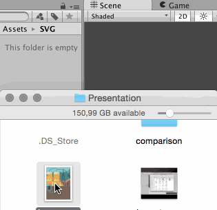
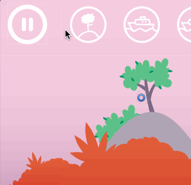
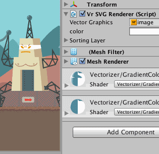
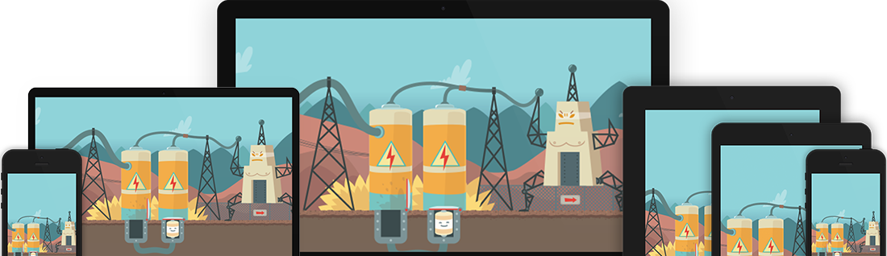
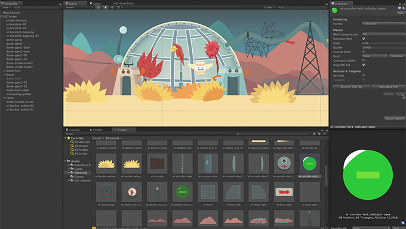
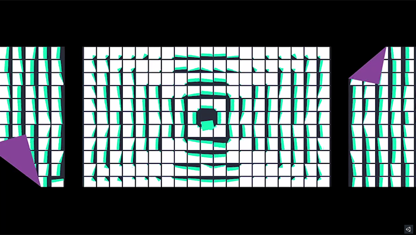

Always sharp
Vector graphics don't suffer from blurry edges or compression artefacts. You have full control over the tessellation quality to always get the best performance possible.
Free & open-source Unity plugin
SVG Importer turns your SVG files into sharp, lightweight, GPU‑friendly meshes. The workflow is as simple as Unity sprites: drop a file in, drag it into your scene.

Proven in production. SVG Importer has powered large commercial mobile games. See the showcase in the trailer.
If you know how to use a sprite in Unity, you already know how to use SVG Importer.
Save artwork from your favourite vector editor and drop the .svg file into your Assets folder. It is imported automatically.
Pick opaque or transparent rendering, set the tessellation quality, a custom pivot, mesh compression, or generate a 2D collider. It's all in the Inspector.
Use it like any sprite: in the world with SVG Renderer or in Unity UI with SVG Image. Your existing scripts keep working.
Vector graphics don't suffer from blurry edges or compression artefacts. You have full control over the tessellation quality to always get the best performance possible.
Build your user interface completely resolution independent. No need to rewrite existing scripts or components.
Fits your existing workflow. Drag & drop assets directly into your scene, just like sprites.
Vector graphics are pre-baked at import time, in the editor only. Your game loads ready-made meshes at the quality you chose, with no extra overhead. The shaders are simple and well optimised.
Textures store every pixel on disk and in memory. Vector images store only a series of points, which can make builds up to 10× smaller, depending on the project.
SVG Importer is free to use in all of your projects, commercial or not. The full source code is on GitHub.




Export SVG 1.1 from any of these editors:
One asset, every screen. Phones, tablets and desktops all get crisp graphics from the same small file.


A walk through the import settings and editor workflow.

How SVG Importer gives mobile games sharp graphics in small files, without blurry compressed textures.
A trailer made in Unity with SVG Importer over one weekend. This is a screen capture of the result.